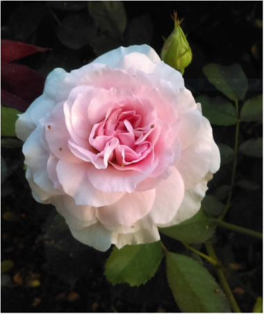
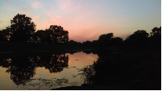
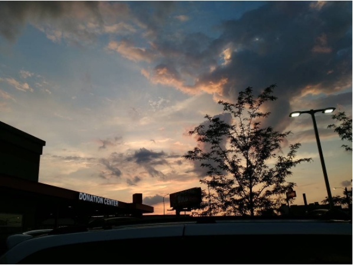
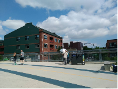
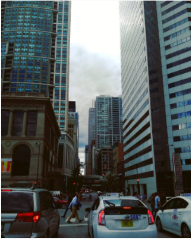
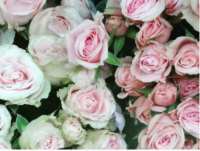
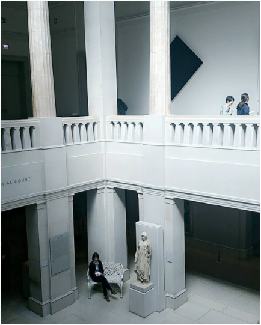

Photography is quite important especially in the 21st century where it eventually become the most popular and accessible way to capture A) a moment B) Information. It has essentialy transform society and culture. Every where one turns there is someone taking a picture or looking at one. Here is a fun fact: what you are seeing is eventually a picture that your brain took, same way a video is a series of photographs.
If you want to find out more about photographs and pictures here are some easy links
(the images below have all been taken by me)






